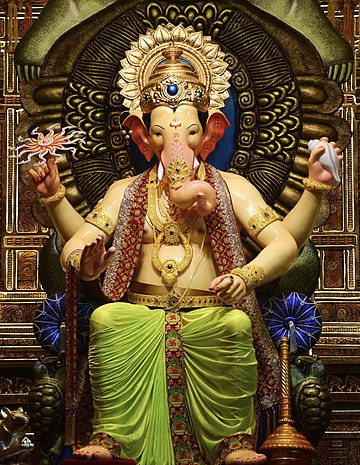

INDOFEST
Home Festival Contact Us About Us
Indo Festivals
GANESH CHATURTHI :
basic info:
(basic info about your fest)
Ganesh Chaturthi is a Hindu festival that celebrates the birth of Lord Ganesha, the god of wisdom, prosperity, and good fortune. It's also a time to promote harmony, community, and solidarity.
What is celebrated?
Birth of Lord Ganesha
The festival commemorates the birth of the elephant-headed god, who is believed to be the son of Lord Shiva and Goddess Parvati
Community
The festival is a social event that brings people together from different backgrounds and communities
Hope and prosperity
It's a time to seek blessings and good fortune from Lord Ganesha
Wisdom and knowledge
Ganesha's large head represents wisdom, and the festival encourages people to seek knowledge
Patience and perseverance
Ganesha's big ears remind people to be good listeners, and his calm demeanor teaches patience
Humility and modesty
Ganesha's small eyes remind people to stay focused on their goals with modesty
best place to visit: KONKAN
(add info about the place its celebrated)The Konkan region, nestled along the western coast of India, is a land teeming with devotees deeply rooted in religious traditions and an array of vibrant festivals. Among these celebrations, the festival of Ganesh Chaturthi stands out as a beacon of devotion, eagerly anticipated by Ganesha devotees throughout the region. This year, Ganesh Chaturthi falls on September 19, a date etched in the hearts of the people of Konkan.
One of the most captivating aspects of this festival is the intricate craftsmanship of Lord Ganesha idols. In the bustling villages of Konkan, particularly in Akeri village, Kudal taluka of Sindhudurg district, a legion of skilled artists tirelessly work to create these beautiful representations of Lord Ganesha. Their work is a testament to the fusion of art and spirituality.The process of crafting these divine idols commences as early as June, as artists dedicate themselves to this sacred task. Akeri village alone boasts more than 50 artisans who labor diligently to produce over 1500 small and large Ganpati idols. These exquisite creations are a symbol of the artistic heritage that thrives in Konkan. What makes Akeri village even more remarkable is its contribution to neighboring states, particularly Goa. The Ganpati idols from this village find their way into the hearts and homes of devotees in Goa. These idols range in price from a modest 1500 rupees to more intricate and larger ones valued at 15 thousand rupees. This exchange not only enriches the cultural ties between these regions but also provides a seasonal livelihood to the dedicated artists.
How to visit Konkan
(how to visit , add path/location) U can visit mumbai by train plane or bus. same with goa and to visit Sindhudurg or ratnagiri u can travel by train or bus (can add map according (optional))